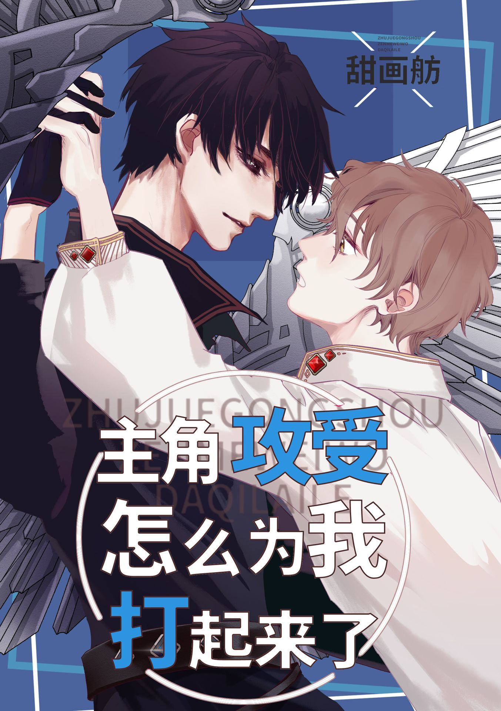

Tang Bai nació en una familia adinerada. Su cuerpo era suave y esbelto, y le encantaba fingir ser consentido. Su familia buscó por todas partes un futuro prometido guapo y rico. Sin embargo, a este le gustaban los omegas independientes y fuertes, y se resistía a este matrimonio por negocios.
Un día, el cerebro de Tang Bai sufrió un cortocircuito, lo que le hizo creer que vivía en un libro. Él era el shou carne de cañón, y su futura prometida era el protagonista. El shou protagonista, Xie Ruheng, era un omega fuerte e independiente de la nueva era que se hacía pasar por un alfa. En el futuro, se convertiría en mariscal y la luz de los omegas.
No es de extrañar que el bento, tan lleno de amor y que tanto le costó preparar, fuera rechazado por su futura prometida, quien ni siquiera lo miró. Los ojos de Tang Bai se enrojecieron al darse la vuelta. Vio que Xie Ruheng estaba comiendo la horrible comida de entrenamiento. ¿Cómo podría la futura luz de los omegas comer esa clase de comida demoníaca que se les daba a los cerdos?
Tang Bai dijo tímidamente: "Esto lo hice yo mismo. Los omegas debemos cuidar nuestra alimentación y nuestro cuerpo."
Xie Ruheng: ……?
La primera vez que Xie Ruheng vio a Tang Bai, pensó que, incluso cuando este omega lloraba, seguía siendo como el omega de sus sueños. Aunque Tang Bai era virtuoso, delicado, hermoso y adorable, ¡ya tenía una posible prometida!
Xie Ruheng expresó con dolor: "No seré el tercero".
Tang Bai estaba sumamente conmovido, pensando que Xie Ruheng ya se había convertido en una buena hermana para él y que no vendría a robarle a su hombre. Había un dicho que decía que los alfas eran como la ropa y las buenas hermanas, como las manos y los pies. ¡No te preocupes, te cuidaré bien!
Xie Ruheng: ……
Muy pronto, Xie Ruheng escuchó un rumor. El futuro prometido de Tang Bai lo odiaba, pero no podía desafiar las órdenes de su familia, así que solo podía causarle problemas en todas partes.
Xie Ruheng: Este es el omega de mis sueños que quiero sostener en la palma de mis manos, ¿y en realidad no lo aprecias? ¡Mierda!
Xie Ruheng: ¿No es como robar a un hombre? Qué dulce.
Tang Bai se enteró horrorizado: ¿¡Por qué el protagonista gong y shou pelean por mi culpa?!
Tang Bai: ¡Oh! ¡Deben tener una relación de amor y odio!